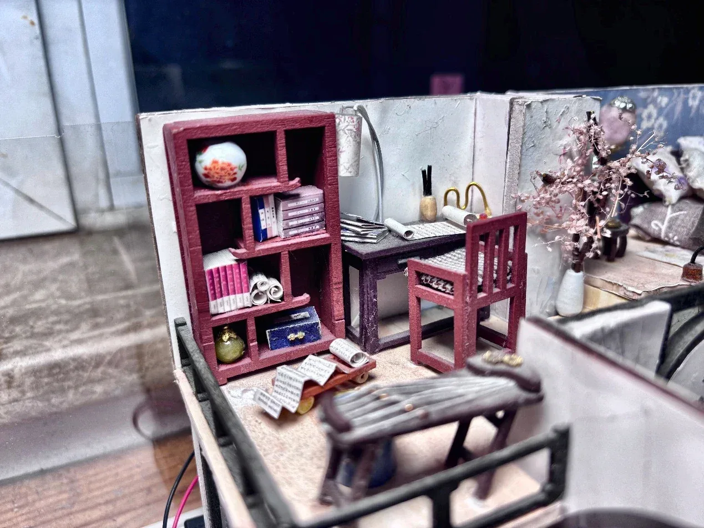

A house inminiature
A whole home, small enough to sit on a desk.
The tactile books asked how a story can be read by hand. This project asks the opposite question: how much can a world hold when it is read only by the eye? I shrank a whole home onto a desktop.
0+rooms on one continuous floor
0+ hrsbuild time
0+hand-made parts
01How it was built
01Plan the floorFive rooms on one level, with the bed lofted above the kitchen.
02Build the shellWalls, floor and loft go up first and must be square, or nothing inside sits straight.
03Make the furnitureBookcase, desk, bed, sofa and cabinets, assembled piece by piece with tweezers and glue.
04Dress every roomBedding, a towel on the rail, food on the plates: the details that make it look lived in.
02The study
A desk and a full bookcase give the house someone's habits: tiny printed books, a desk lamp, brushes and a chair pulled up to work.

03Moon window
A round window frames the living room like a view in a Chinese garden. Painted branches climb the walls and a screen glows with a mountain sunset.

04Look closer


Making it small is not the hard part. The hard part is making every room believable.On scale, surface and light